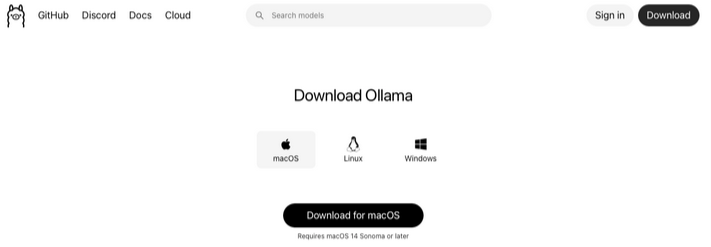
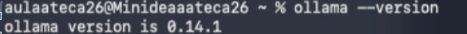
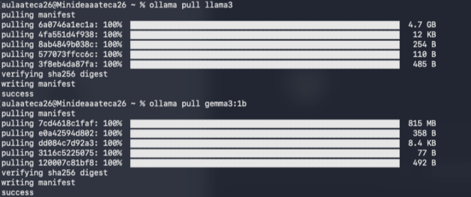
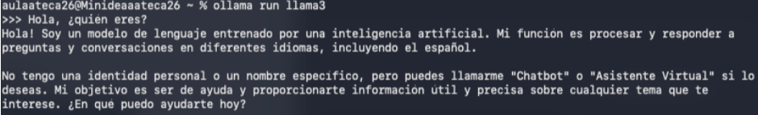
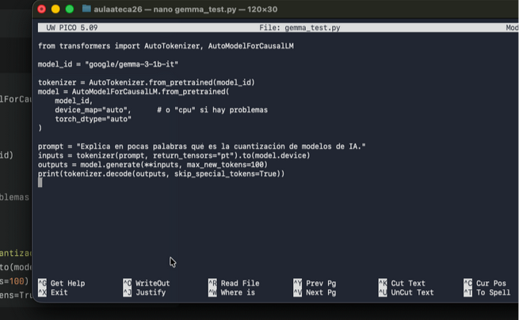
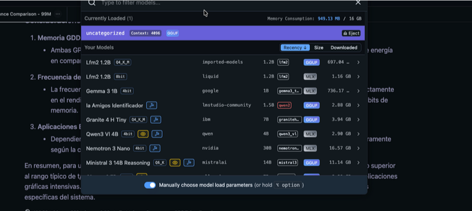
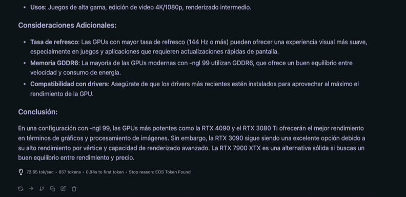
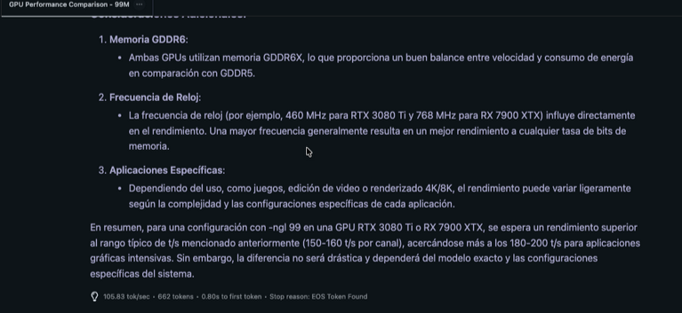

Instalar ollama en macOS

Luego en la terminal ejecutaremos varios comandos:
- Ver la versión que nos hemos instalado:

- Descargamos distintas IAs:

- Ejecutamos la IA llama3 que hemos instalado y después, le hacemos preguntas, para ver si funciona:

Luego, dentro del archivo gemma_test.py hemos añadido:

Después de hacer esto, hemos subido dos IAs a LMStudio

Aqui podemos observar ambas IAs y que el peso de cada una es distinta, por lo que podemos diferenciar cual está cuantizada y cual no, siendo la que pesa menos la cuantizada
Y la IA sin cuantización:

Vemos que los tk/s es 72.65 y el tiempo en dar el primer token es 0.84s
Luego hemos cargado la IA cuantizada:

Vemos que los tk/s 105.83 y el tiempo en dar el primer token es de 0.80s
En conclusión, podemos obserbar que la IA con la cuantización es menos precisa, tarda más en contestar, tarda menos en dar el primer token y que ocupa menos que la IA sin cuantizar.